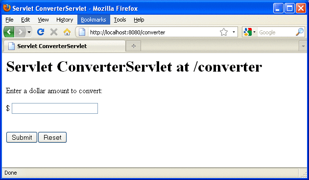

Creating the Enterprise Bean
The enterprise bean in our example is a stateless session bean called ConverterBean. The source code for ConverterBean is in the tut-install/examples/ejb/converter/src/java/ directory.
Creating ConverterBean requires these steps:
Coding the bean’s implementation class (the source code is provided)
Compiling the source code with the Ant tool
Coding the Enterprise Bean Class
The enterprise bean class for this example is called ConverterBean. This class implements two business methods (dollarToYen and yenToEuro). Because the enterprise bean class doesn't implement a business interface, the enterprise bean exposes a local, no-interface view. The public methods in the enterprise bean class are available to clients that obtain a reference to ConverterBean. The source code for the ConverterBean class follows.
package com.sun.tutorial.javaee.ejb;
import java.math.BigDecimal;
import javax.ejb.*;
@Stateless
public class ConverterBean {
private BigDecimal yenRate = new BigDecimal("115.3100");
private BigDecimal euroRate = new BigDecimal("0.0071");
public BigDecimal dollarToYen(BigDecimal dollars) {
BigDecimal result = dollars.multiply(yenRate);
return result.setScale(2, BigDecimal.ROUND_UP);
}
public BigDecimal yenToEuro(BigDecimal yen) {
BigDecimal result = yen.multiply(euroRate);
return result.setScale(2, BigDecimal.ROUND_UP);
}
}Note the @Stateless annotation decorating the enterprise bean class. This lets the container know that ConverterBean is a stateless session bean.
Creating the converter Web Client
The web client is contained in the servlet class tut-install/examples/ejb/converter/src/java/converter/web/ConverterServlet.java. A Java servlet is a web component that responds to HTTP requests.
The ConverterServlet class uses dependency injection to obtain a reference to ConverterBean. The javax.ejb.EJB annotation is added to the declaration of the private member variable converterBean, which is of type ConverterBean. ConverterBean exposes a local, no-interface view, so the enterprise bean implementation class is the variable type.
@WebServlet
public class ConverterServlet extends HttpServlet {
@EJB
ConverterBean converterBean;
...
}When the user enters an amount to be converted to Yen and Euro, the amount is retrieved from the request parameters, then the ConverterBean.dollarToYen and ConverterBean.yenToEuro methods are called.
...
try {
String amount = request.getParameter("amount");
if (amount != null && amount.length() > 0) {
// convert the amount to a BigDecimal from the request parameter
BigDecimal d = new BigDecimal(amount);
// call the ConverterBean.dollarToYen() method to get the amount
// in Yen
BigDecimal yenAmount = converter.dollarToYen(d);
// call the ConverterBean.yenToEuro() method to get the amount
// in Euros
BigDecimal euroAmount = converter.yenToEuro(yenAmount);
...
}
...
}The results are displayed to the user.
Compiling, Packaging, and Running the converter Example
Now you are ready to compile the enterprise bean class (ConverterBean.java) and the servlet class (ConverterServlet.java), and package the compiled classes into a WAR file.
To Build, Package, and Deploy the converter Example in NetBeans IDE
To build, package, and deploy the converter example in NetBeans IDE, follow these steps.
- In NetBeans IDE, select File→Open Project.
- In the Open Project dialog, navigate to tut-install/examples/ejb/.
- Select the converter folder.
- Select the Open as Main Project and Open Required Projects check boxes.
- Click Open Project.
- In the Projects tab, right-click the converter project and select Deploy.
A web browser window opens the URL http://localhost:8080/converter.
To Build, Package, and Deploy the converter Example Using Ant
To build. package. and deploy converter using Ant, follow these steps.
- In a terminal window, go to this directory:
tut-install/examples/ejb/converter/
- Type the following command:
ant all
This command calls the default task, which compiles the source files for the enterprise bean and the servlet, placing the class files in the build subdirectory (not the src directory) of the project. The default task packages the project into a WAR module: converter.war. For more information about the Ant tool, see Building the Examples.
Note - When compiling the code, the ant task includes the Java EE API JAR files in the classpath. These JARs reside in the modules directory of your GlassFish Server installation. If you plan to use other tools to compile the source code for Java EE components, make sure that the classpath includes the Java EE API JAR files.
To Run the converter Example
To run the converter example, follow these steps.
- Open a web browser to the following URL:
http://localhost:8080/converter
The screen shown in Figure 15-1 appears.
Figure 15-1 converter Web Client
 - Type 100 in the input field and click Submit.
A second page appears, showing the converted values.